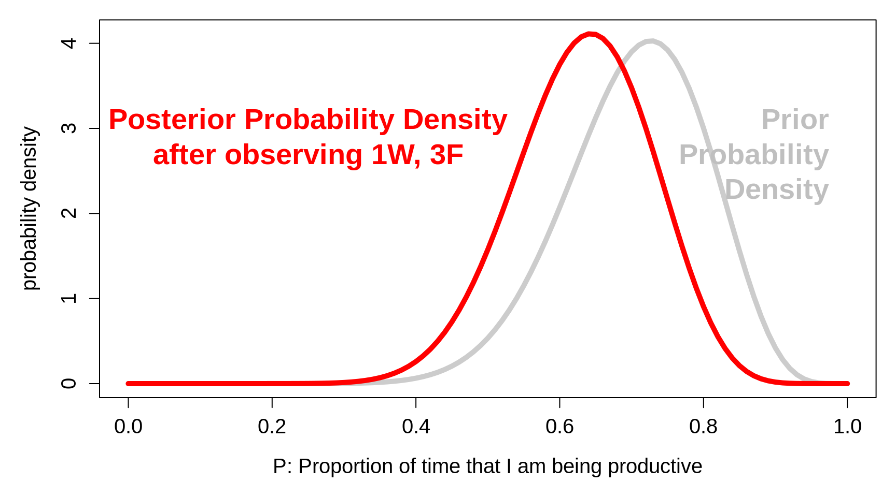

Chapter 14 Computing Week2
The ‘computing’ objectives are to learn how to use R to
simulate random variation, and random variables
visualize the consequences of aggregating independent random variables
discover the statistical laws that govern the variability of combinations of observations
The ‘statistical’ objectives of this exercise are to
be introduced to parameters that measure the spread of the distribution of a random variable, whether it be an error distribution, or a biological one.
learn (empirically) the statistical laws that govern how the spread of a linear combination (e.g, the sum, or the mean) of several (generically, \(n\)) independent random variates is related to the spread of the individual random variables.
The ultimate objective is to be able to use these laws to help investigators, such as Henry Cavendish, to (probabilistically) quantify how far off their parameter estimates might be.
14.1 Scientific background [from Hughes*]
In Isaac Newton’s Principia, Book III, The System of the World, Proposition 10, Theorem 10 we read: ‘If the earth were not denser than the seas, it would emerge from those seas and, according to the degree of its lightness, a part of the earth would stand out from the water, while all those seas flowed to the opposite side. By the same argument the spots on the sun are lighter than the solar shining matter on top of which they float. And in whatever way the planets were formed, at the time when the mass was fluid, all heavier matter made for the centre, away from the water. Accordingly, since the ordinary matter of our earth at its surface is about twice as heavy as water, and a little lower down, in mines, is found to be about three or four or even five times heavier than water, it is likely that the total amount of matter in the earth is about five to six times greater than it would be if the whole earth consisted of water, especially since it has already been shown above that the earth is about four times denser than Jupiter.’
The fact that the average of Newton’s ‘five or six’ is very close to today’s value of the mean relative density of the Earth shows just how prescient he was. The mean density of the Earth was an extremely important quantity in early Renaissance science as it provided a strong clue as to planetary composition.
Table 2 in the article by Hughes shows ‘Values suggested for the mean density of the Earth, as a function of the date of publication’ starts with Newton’s 1687 guesstimate, and ends, (23 estimates later) with Heyl and Chrzanowski’s 1942 value. Five of the 24 estimates are accompanied by a \(\pm\) value, but what this values signifies is left unexplained. One of the 24s is Cavendish’s 1798 estimate, which he obtained by taking the mean of 29 density measurements derived using a torsion balance on 17 days in the months of August and September, and the following April and May. Cavendish’s ‘point estimate’ was 5.48. Since his’extreme results do not differ from the mean by more than 0.38,or \(\frac{1}{14}\) of the whole’ […] Therefore, it seems very unlikely that the density of the earth should differ from the 5.48 by so much as \(\frac{1}{14}\) of the whole.’
Here we have an effort, by no less than Isaac Newton, to give a numerical interval within which the true parameter value is likely to lie. Cavendish it seems very unlikely that the density of the earth should differ from the 5.48 by so much as \(\frac{1}{14}\) of the whole.‘bounds on the amounts by which the ’likely’
14.2 Random Variation
14.2.1 Measurement errors
The ‘standard’ since been replaced by fancier methods, but for now let’s imagine that every family in the world make their own independent physical copy (using say string or paper or cardboard) of the official 1 meter platimun bar that used to be stored in Paris. Suppose these copies had a measurement error of either +1 centimeter or -1 centimeter (with plus errors and minus errors being equally likely). Thus, these errors, or ‘deviations’ from the 100cm, average out to 0. Each squared deviation is 1, so the mean squared deviation (called the error variance) is also 1. Its square root, also 1 in this instance, is called the standard deviation of the errors, or \(\sigma_{e}\) for short.
Now imagine taking a random sample of \(n\) of these copies, and computing the sum and the mean of the \(n\) lengths.
Although it is possible to mathematically enumerate/calculate the exact probalities that the sum or mean takes on the various possible values, we will instead use R to approximate the probabilities by simulation. The probabilities in the following Figure are based on large enough numbers of simulations that – while they don’t show the perfect symmetry they would exhibit if we worked them out mathematically – they give quite close approximations.
The uppermost panel in the following figure shows the probability of obtaining various sums and various sample means.

Instead of a 2-point error distribution, the next Figure shows how variable the sample totals and sample means would be if the errors were distributed as in the first row below. There, a quarter of the measurements have errors of +\(\sqrt{2} \approx\) +1.4cm, half have no error, and a quarter have errors of -\(\sqrt{2} \approx\) -1.4cm. Thus the error variance, the average of the squared deviations, is \[\sigma_e^2 = \frac{1}{4} \times (-1.4)^2 + \frac{1}{2} \times (0)^2 + \frac{1}{4} \times (1.4)^2 = 1,\] so that the standard deviation is again \(\sigma_e = 1.\)
The row- (n-) specific distributions in the two Figures are not exactly the same. For example, the possible means in samples of size \(n\) = 2 have a 3-point distribution in the first one, but a 5-point distribution in the second one. But, as you will be asked to verify in the exercises below, the row-specific variances ate the same in the two figures.

More important than this are the statistical laws governing how widely the sums (and the means) deviate from the 100cm. Clearly, the possible sums of 5 copies have a wider spread than the possible sums of 2, and the sums of 10 a wider spread than the sums of 5. Conversely, the means of 5 copies have a narrower spread than the means of 2, and the means of 10 a narrower spread than the means of 5.
**Instead of just telling you what the laws are, we ask you to use R to discover them yourself.
14.2.2 Discovering the Laws [via this computing exercise]
14.3 Biological variation
Title: The mean density of the Earth Authors: Hughes, D. Journal: Journal of the British Astronomical Association, Vol. 116, No. 1, p.21